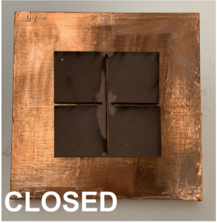

I worked on a project called the Metantenna in Professor Stefanie Mueller’s lab. We improved
the characteristics of a microstrip patch antenna by changing the geometry of the conducting
patch. I manufactured 2D metamaterial patterns based off of auxetic wallpaper material
designs. I laser cut these patterns on silicon rubber sheets in their open and closed orientations.
From there, I designed and 3D printed cylinders made of the grid pattern that could be
compressed. I used Fusion 360, Solidworks, Adobe Illustrator, and spray paint in the wet lab. I
enjoyed collaborating with the other students in the lab. Working with a team deepened my
understanding of the project and made the technical effort even more fun. I appreciated how
our different backgrounds and ways of thinking led to better technical outcomes.

The most successful design (images to the right) achieved -21.5 dB at 1.585 GHz in its open orientation and -24.4 dB at 1.540 GHz in its closed orientation. The least successful design, a basic four square grid pattern shown to the left, achieved -7.85 dB at 1.405 GHz in its closed orientation.
The images above are three different iterations of 3D printed cylinders made of the grid auxetic
wallpaper pattern. The goal was for the cylinder to compress with minimal gaps between the
square pieces, and remain compressed. It was important for there not to be space between the
squares when compressed so that we could later test them in their “open” and “closed”
orientations, similar to what we did for the 2D patterns. The third cylinder was the most
successful design because there were little to no gaps when compressed.